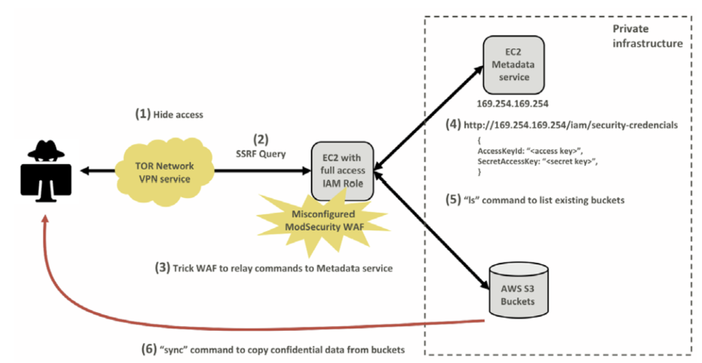

Capital One (2019) 사고 사례 분석
1. 개요
미국의 5대 소비자 은행 중 하나인 캐피털 원(Capital One)은 "우리는 뱅킹을 하는 기술 회사를 만들고 있다"고 공표할 만큼 클라우드 도입과 디지털 전환에 적극적인 기업이었습니다. 하지만 2019년 클라우드 보안 역사에 기록될 대규모 데이터 유출 사고를 겪으며 큰 타격을 입었습니다.
주요 타임라인 및 발견 경위
- 사고 발생: 실제 무단 침입과 데이터 접근은 2019년 3월 22일과 23일 양일간 발생했습니다.
- 사고 발견: 침입 후 약 4개월이 지난 2019년 July 17일, 한 외부인이 캐피털 원의 데이터가 GitHub(Gist)에 노출되어 있다는 사실을 보안 제보 이메일로 알리면서 인지하게 되었습니다.
- 공식 발표: 캐피털 원은 내부 조사를 거쳐 7월 19일에 외부인이 권한 없이 서버에 접근하여 정보를 탈취했음을 공식적으로 확정했습니다.
피해 규모 및 유출 정보
- 피해 대상: 미국 내 고객 약 1억 명, 캐나다 고객 약 600만 명을 포함하여 총 1억 600만 명에 달하는 방대한 인원이 영향을 받았습니다.
- 유출 항목: 신용카드 신청 시 수집되는 이름, 주소, 우편번호, 전화번호, 이메일, 생년월일 및 자가 보고된 소득 정보 등이 포함되었습니다.
- 공격자: 전직 아마존(AWS) 기술 직원이자 시애틀 출신의 여성인 Paige A. Thompson으로 밝혀졌으며, FBI 수사 결과 그녀는 캐피털 원 외에도 30여 개 이상의 기업 및 기관의 데이터를 탈취한 혐의를 받았습니다.
이 사건은 클라우드 서비스 제공업체(AWS)의 결함이 아니라, 사용자의 설정 오류(Misconfiguration)가 대규모 사고로 이어질 수 있음을 보여준 대표적인 사례가 되었습니다.
2. 공격 분석

1. Hide Access (접근 은닉)
공격자는 자신의 실제 IP 주소를 숨기고 수사 기관의 추적을 피하기 위해 TOR 네트워크와 VPN 서비스인 IPredator를 사용하여 공격을 시도했습니다.
- TOR (The Onion Router): 여러 단계의 암호화 거점(Node)을 거쳐 데이터를 전송하는 익명 네트워크입니다. 최종 목적지 서버에서는 데이터의 최초 출발지를 알 수 없게 되어 사용자의 실제 IP 주소를 숨깁니다.
- IPredator: 스웨덴 기반의 익명 VPN 서비스로, 사용자 로그(접속 기록)를 남기지 않는 정책을 가집니다.
- 복합 사용: TOR 네트워크와 VPN을 병행 사용하여 공격자 위치 파악을 이중으로 차단했습니다.
2. SSRF Query (SSRF 공격)
공격자는 서버가 권한이 없는 내부 리소스에 요청을 보내도록 만드는 SSRF(Server-Side Request Forgery) 공격을 수행했습니다.
- 취약점 활용: 이 취약점을 이용하면 서버를 Proxy로 삼아 외부에서 직접 접근할 수 없는 내부 백엔드 리소스에 악성 요청을 보낼 수 있습니다.
- 핵심: 공격자가 취약한 서버를 조작하여 내부 네트워크나 의도하지 않은 위치로 요청을 보내게 하는 웹 보안 취약점입니다.
3. Trick WAF to relay commands to Metadata service (WAF 설정 오류 악용)
캐피털 원은 오픈소스 WAF인 ModSecurity를 사용하고 있었으나, 설정 오류로 인해 외부의 악성 명령이 필터링되지 않고 백엔드로 전달되는 허점이 있었습니다.
- 공격 경로: 공격자는 WAF를 통과한 명령이 AWS의 핵심 내부 서비스인 메타데이터 서비스(Metadata Service)에 도달하게 유도했습니다.
4. Obtain Credentials (자격 증명 탈취)
공격자는 SSRF를 통해 AWS 메타데이터 서비스(IMDS) URL에 접근하여 임시 자격 증명을 획득했습니다.
http://169.254.169.254/latest/meta-data/iam/security-credentials/
- IMDS (Instance Metadata Service): EC2 인스턴스의 설정 정보 및 해당 인스턴스에 부여된 IAM 역할(Role)의 임시 자격 증명을 제공하는 서비스입니다.
- 탈취 결과: 공격자는 WAF에 할당된 IAM 역할인
*****-WAF-Role의 임시 보안 자격 증명을 탈취하는 데 성공했습니다.
5. "ls" command to list existing buckets (데이터 탐색)
탈취한 자격 증명을 자신의 로컬 환경에 설정한 후, AWS CLI를 통해 계정 내 자원을 탐색했습니다.
- 명령행:
aws s3 ls - 결과: 캐피털 원 클라우드 계정에 존재하는 모든 AWS S3 버킷의 목록을 확보하고 유출 대상을 식별했습니다.
6. "sync" command to copy confidential data from buckets (데이터 유출)
마지막으로 AWS의 sync 명령을 사용하여 대량의 데이터를 외부로 복사했습니다.
- 피해 규모: 700개 이상의 S3 버킷에 담긴 데이터를 복사하였으며, 약 30GB에 달하는 고객 데이터가 최종 유출되었습니다.
3. 대응 방안
당시 캐피털 원이 사용한 IMDSv1은 별도의 인증 토큰 없이 HTTP GET 요청만으로 자격 증명을 반환하는 구조였기 때문에 SSRF 공격에 매우 취약했습니다. 현재 AWS는 이러한 사고를 방지하기 위해 세션 기반의 토큰 인증이 추가된 IMDSv2 사용을 강력히 권장하고 있습니다.
최소 권한 원칙(Least Privilege)의 부재: 탈취된 WAF 전용 IAM 역할(*-WAF-Role)이 방화벽 운영과 무관한 S3 버킷 내 데이터 접근 및 복사 권한을 과도하게 가지고 있었습니다. 만약 권한이 최소화되었다면 자격 증명이 유출되었더라도 대규모 데이터 유출로 이어지지 않았을 것입니다.
실시간 탐지 및 대응 체계 실패: 캐피털 원은 사고 발생 당시 모든 공격 로그를 보유하고 있었음에도 불구하 이를 실시간으로 분석하고 차단하지 못했습니다. 결국 사고 인지는 자체 보안 관제가 아닌 외부 제보를 통해 4개월 만에 이루어졌습니다.